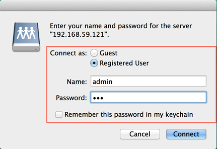

Overzicht
Synology NAS is ontworpen om eenvoudig en snel bestanden in een lokale netwerk te delen en op te slaan, zodat u direct toegang krijgt tot gedeelde mappen en bestanden op de Synology NAS, zonder dat u telkens weer moeite moet doen om in te loggen bij DSM. Bijvoorbeeld met Finder kunt u bestanden op de Synology NAS opslaan, net als op andere netwerkapparaten.
Toegang tot gedeelde mappen met Mac OS
- Open Finder op de Mac-computer.
- Kijk naar de menubalk bovenaan in het scherm.
- Klik op Ga en selecteer daarna Verbinden met server.
- Voer het ip-adres van de Synology NAS in, voorafgegaan door "afp://". Bijvoorbeeld "afp://192.168.59.121". Klik op Verbinden om door te gaan.
- Voer uw gebruikersnaam en wachtwoord voor DSM in. Uw gebruikersaccount moet de juiste bevoegdheden voor lezen/schrijven hebben voor de gedeelde map die u probeert te openen. Klik op Verbinden om door te gaan. 
- Als tenslotte uw gebruikersnaam en wachtwoord correct zijn, ziet u nu de Synology NAS in het onderdeel Gedeeld van het Finder-venster. Dubbelklik op de gedeelde map en verken de inhoud.


Favoriete servers: Druk op het plusteken (+) om ip-adressen in te stellen als favoriete servers. U kunt ook op de klokknop klikken voor een lijst met servers waarmee recent verbinding is gemaakt.

- Vorige in dit onderwerp: Bestanden opslaan op Synology NAS vanaf een Windows-pc in het lokale netwerk